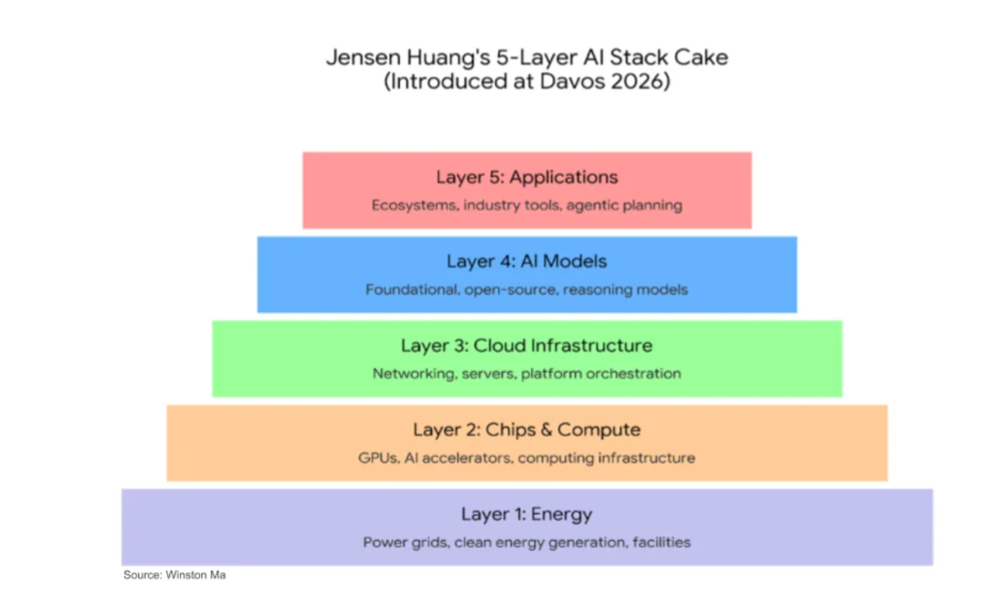

Core Framework And Extensions
The 5-Layer AI Stack Cake
Jensen's framework is a good starting point for understanding the AI stack. The 5 layers are:
- AI Applications. Examples: Faculty AI, BCG X, Isomorphic Labs, ...
- Models. Examples: Antropic, OpenAI, Mistral, ...
- Cloud Infrastructure. Examples: AWS, Microsoft Azure, Google Cloud, ...
- Chips & compute. Examples: Nvidia, TSMC, ...
- Energy. Examples: Octopus Energy, ...

This framework is a good starting point for understanding the different levels at which we can invest, but some layers are more over-invested in than others, which creates opportunities for investors. Let's explore that further.Over- & Under-Investment
The intention here is to order the layers from most over-invested in to most under-invested in, with the most under-invested in layer being the one with the least competition and most opportunity for outsized returns. We will rank each layer using the following criteria:
- Hype: General hype around the layer
- P/E: Average P/E ratio for companies in the layer
- Moat: Moat for companies in the layer
- Opportunities: Public companies in the layer
| Layer | Hype | P/E | Moat | Opportunities |
|---|---|---|---|---|
| AI Applications | Medium* | Average | Low: Low cost of entry into new sectors, but existing sector-specific solutions give strong customer lock-in. This layer also risks being eaten by future AI models, which will be able to solve problems in specific sectors without the need for sector-specific solutions. | Large: Applied AI - be it consulting companies or sector-specific solutions - is still ultimately where the value is: the model without application is just wasted potential.The problem with this layer is that it's not scalable. One solution for one sector is not applicable to another sector. |
| AI Models | High | Inf: High valuations, negative profitability | Small: high barrier to entry but competition between major players drive prices down | Small: Limited public companies, but significant opportunities for growth |
| Cloud Infrastructure | Medium | Medium: Cloud infrastructure is a mature market with established players. | Medium: Multiple routes into the market | Medium: Many public companies in the space, but limited innovation other than keeping up with the latest chip & compute trends. |
| Chips & Compute | High | High: Nvidia's P/E through the roof, TSMC slowly creeping up | High: huge barrier to entry in knowledge & capital requirements | Medium: public companies in the space, however the few big players dominate and these are already highly valued (Nvidia). |
| Energy | Low | Medium: energy has been stable and mature for decades however increased demands may lead to upside. | Medium: multiple routes into the market | Medium: many public companies in the space with new entrants offering potential for growth. |
This table's layers also are not perfectly separated: the foundation model companies have many FDE's who are paid to integrate into customers' workflow to help architect and deploy the models into workflows. Therefore these companies are, in part, Applied AI companies.
Conclusion
To release the potential that model companies create requires building real products to solve specific problems in specific sectors. This task sits squarely within the Applied AI layer. There is a large opportunity and strong moat within the Applied AI companies, and we're starting to see the battle for these companies with the large players: with the acquisitions such as Faculty AI by Accenture to maintain consulting control in building applied AI solutions via consulting projects, and the foundation model companies build out their FDE layers both organically and with acquisitions, such as acquisition of Tomoro AI by OpenAI to realise the potential of the ChatGPT's. The low cost of entry into the applied AI space, combined with the strong moats that can be built by solving specific problems in specific sectors, creates a large opportunity for investors to get outsized returns by investing in the new applied AI companies. There is a risk that the applied AI companies (AAC) will be eaten by the foundation model companies, but this risk is mitigated by the fact that the applied AI companies are building strong moats in specific sectors by getting customer buy-in ahead of time. When the foundation models do eventually get capability to do, previously, what whole AACs were created to achieve, the AACs will have to shift their value add to further up the stack, discount their previous offering to remain competitive.Notes about the author: I have worked in both the semiconductor industry close to the bottom and the applied AI industry at the top, and have seen large positive returns as an active investor for the last 15 years.
Note: this is not financial advice, just my personal view on the space based on my experience as an investor and working in the industry.